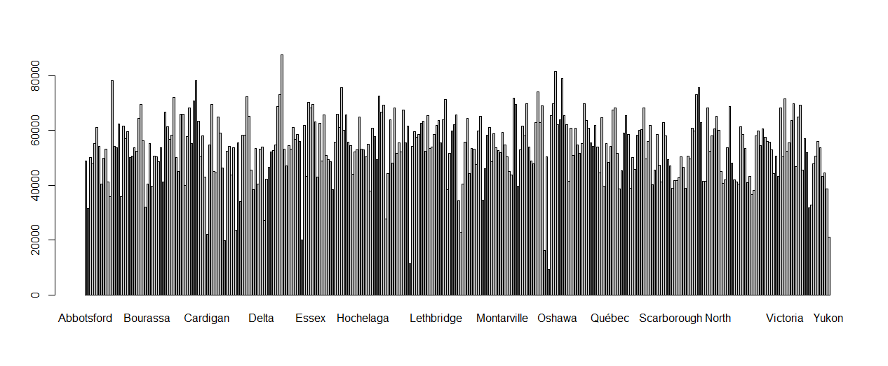

I attest that this webpage, which contains WHAT, WHY and HOW analysis examining the Canadian federal election data set, with particular reference to the Candidates.csv and Results.csv data files, was solely my work, using some of the class texts and Tamara Munzner's book of Visualization Design.
election_id : An identifying column comprised of "GE" (for "General Election"), the election number, and the year in which the election occurred.
What : Ordered and Ordinal
Ballot Sequence Number : An identifying column for candidates
What : Categorical
Candidate_candidat : The Full name of Candidate
What :Categorical
candidate_province_english_anglais : The province in which the candidate resides.
What :Categorical
party_abbreviation_english_anglais : An abbreviation or short name of a political party, for ease in typing syntax.
What : Categorical
election_id : An identifying column comprised of "GE" (for "General Election"), the election number, and the year in which the election occurred.
What : Ordered and Ordinal
ballot_sequence_number : An identifying column for candidates. At each election, in each riding, a candidate is identified by a unique number. This number represents the position of the candidate when listed alphabetically by surname.
What : Categorical, Ordered
candidate_poll_votes_count_votes_du_candidat_pour_le_bureau : The number of votes received by the candidate at this polling station in this election.
What :Quantitative
The stated goal directs us to how the popular vote in each province compares to the representation in Federal Parliament, for the top four federal political parties. It may be worthwhile to suggest a more detailed interpretation of this goal, but based on this general objective only, here is the action/target pairs identified per the Why methodology:

This bar plot shows the total number of votes for each province. Each of the riding (bar) is represented with the same colour, the dark bars are overlapping columns for two province located side-by-side.
The Standard Bar Chart Idiom was used. It presents counts of categorical data items with bars, whose length encodes the votes. In another word, it presents a two-dimensional data, where the key attribute is categorical and the other attribute is quantitative.
The how encoding uses the arrange method category express value to arrange lines on the x axis, the channels being vertical position. The line mark conveys length depicting the number of votes. This is the most suitable way to represent the visualisation design for effectiveness.
The horizontal bars are not spaced and insome cases overlapped, this is due to the large datasets (observations). Also, not all riding (bars of each province) are showing, due to the same reason. This is a limiting factor for expressiveness.
I can connect my barplot representation to the "No justified 3D". Many people have the intuition that if two dimensions (2D) are good, three dimensions (3D) must be better--after all, we live in a 3D world. However, there are difficulties in visually encoding information with the third spatial dimension, depth, which has important differences from the two planar dimensions. This is also because detailed comparison better represented in 2D.